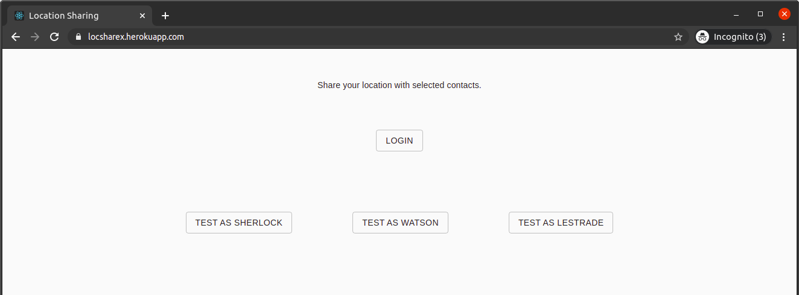
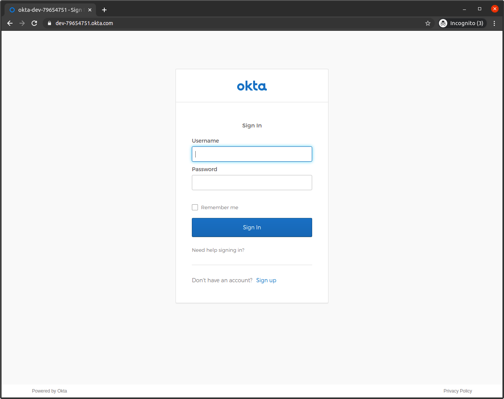
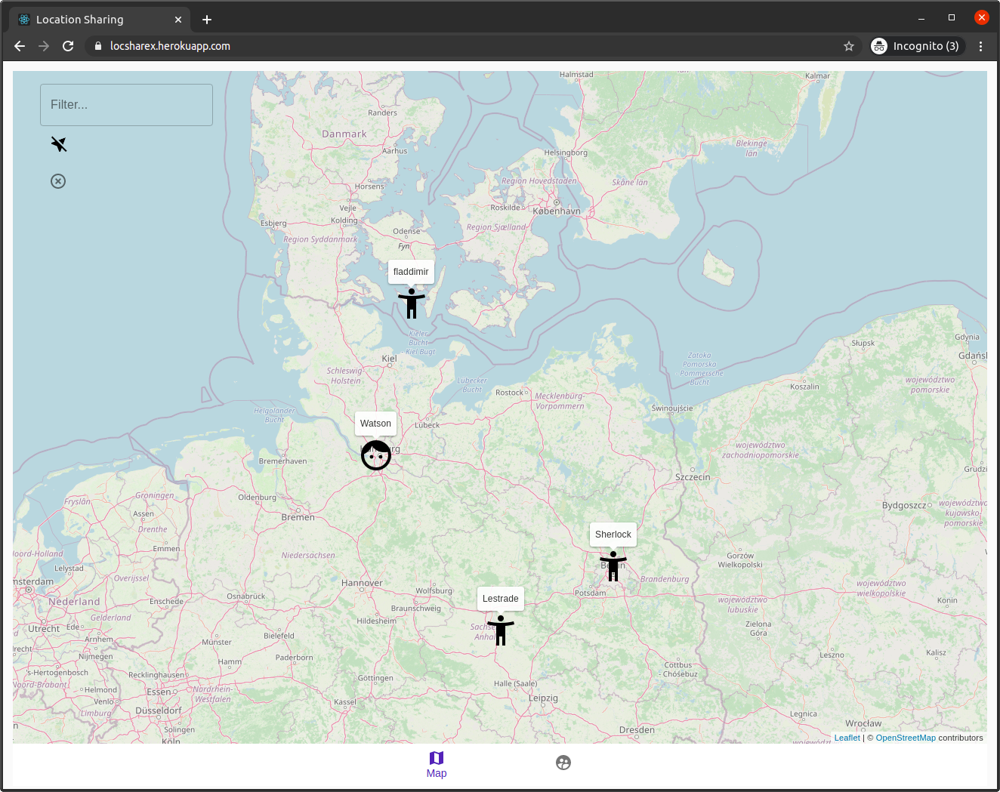
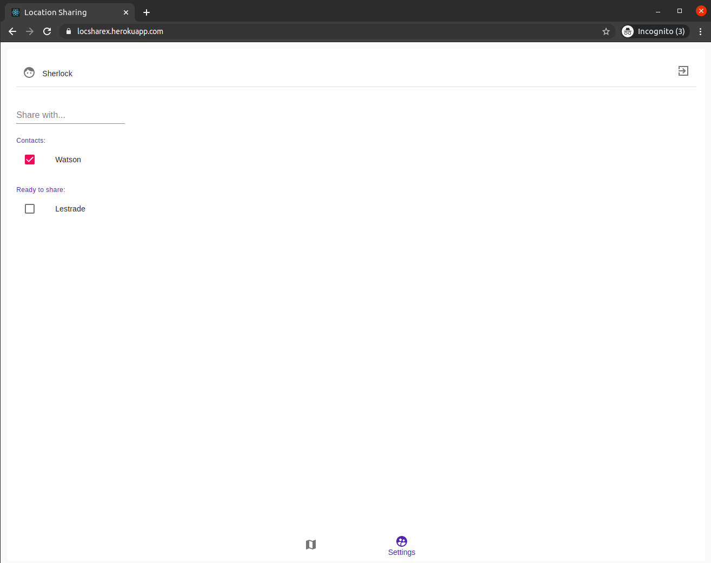
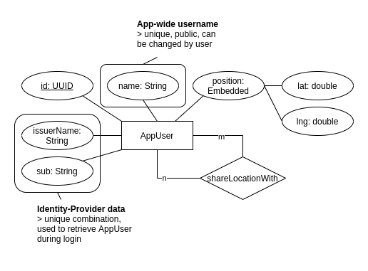
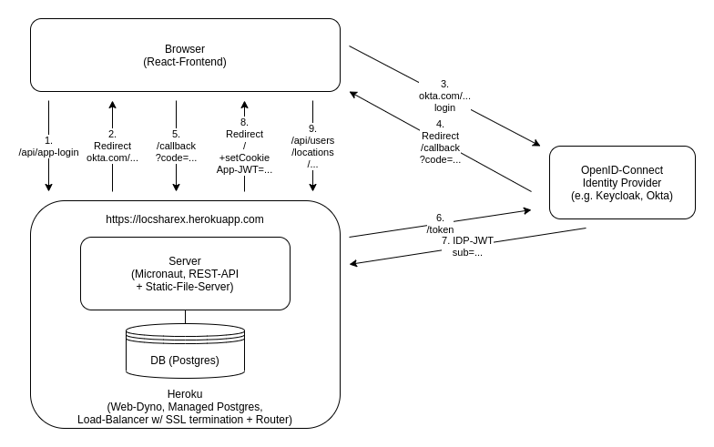

Playing around with React, Leaflet, Micronaut, Okta, & Heroku
A simple web-app for sharing geo-locations with friends

Wouldn’t it be cool to be able to share your location with friends, but without relying on established service providers, which most probably already know way more about you than they should?
This post will look at a small web-app implementing essential basics of that functionality, using React and Leaflet at the frontend, Micronaut at the backend, Okta as identity provider, and Heroku for free hosting.
Get the repo: https://github.com/fladdimir/locsharex.
TL;DR - just show me the app!
(first request may take some seconds, due to a possibly sleeping Heroku dyno)
Features and UI
Login screen
To get a first impression without sign-up, 3 pre-defined test-users allow you to quickly see the app in action. Just click to login and play around.

Okta-Login
To create your own user, sign-in via Okta, a free Open-ID-Connect identity provider.
(Well, free for any app as long as there are no more than 15k monthly users.)

The Map
Main screen of the app, where you can see your and your friends’ locations.
Edit your location by dragging the marker onto the map, stop sharing your position, or rely on your browser/device location (consent needed).
Filter for username in case of searching for someone specific.

Settings
The contact-administration page, with lots of space for more friends ;)
Look for not-yet-connected people by username, change the name by which people may find you.
Sign-out to try another test-user or check back later.

Technologies
Frontend
Single-page react-app, created with create-react-app and Material-UI. Open-street-maps integration with help of leaflet and react-leaflet for simple usage within react components with great typescript support. VSCode.
Worth mentioning might be the awesome create-react-app tooling, including a proxy-mode for forwarding of /api requests to another locally running server (no cors hustle), and the HTTPS support required for using the geo-location browser api.
Backend
Micronaut, a popular JVM-based microservice framework, aiming for lower memory footprints and faster start-up times than Spring-Boot, and ( at least currently) still with better support for creating native images with GraalVM (for further start-up time reduction). Thanks to the java-extension, VSCode also provides great support for backend development.
Convenient entity persistence with
Data Repositories and
Hibernate.
Below is a simple entity-relationship-model for the app, showing the AppUser with it’s app-internal ID, name, (embedded) position, and associated users (m-n self-reference):

In addition to the REST-API, Micronaut also provides the possibility to serve static files.
Identity Provider
Micronaut Security offers a variety of options for securing an app, including support for OpenID Connect-based authentication flows. To link persisted user-entities with actual users authenticating via OIDC, the entity also contains information on the identity provider and the sub (a user ID from the identity provider). That information is only used once during login to identify the logged-in user before issuing a new JWT. No info from the identity-provider is given anywhere but to the database.
Micronaut Security includes support for a couple of different OIDC providers out of the box (e.g. Auth0, AWS-Cognito, Okta, Keycloak).
Keycloak is a popular open-source identity and access management solution, lately starting to move from Wildfly to Quarkus - Keycloak-X. Great for just spinning up a container for local development.
Alternatively it is simple to switch to a managed IDP such as Okta.
Shown below is an overview of the application components and their interaction during OIDC login:

- The user decides to login and issues a request to initiate the flow
- The response redirects to the identity provider
- The IDP login is loaded, where the user enters credentials
- Upon successful IDP login, the user is redirected to a callback-endpoint of the app (including a one-time code)
- The user issues the callback request (including the one-time code)
- The app backend makes a secure back-channel request to exchange the user-related one-time code for an ID-token (together with an app-specific, pre-configured client-secret)
- The IDP returns an ID-token containing user information
- The app backend creates a new JWT containing the app-internal user ID and returns the JWT as an http-only cookie as part of a redirecting response
- The browser then sends the cookie with every API request, allowing the backend to validate the JWT and the permission of the user to access requested resources
During logout the user needs to clear the existing IDP session as well as the app session, which can be achieved by a series of redirects between the logout endpoints.
See e.g. this presentation for an in-depth explanation of OAuth 2 and OIDC.
Heroku
Heroku is a platform-as-service which offers a simple way to run an app in the cloud, including a free tier of 550 micro instance-hours per month and a postgres-database with a 10k row limit. Applications can be provided e.g. in form of jars or docker images (the latter may require custom processing of the environment variable storing the Database credentials). After 30 mins of inactivity without incoming requests, an instance is put to sleep and stops consuming instance-hours. To quickly respond to a request when waking up an instance, the usage of a native image of the app can be beneficial (reducing the app startup time from ~4.1 seconds to ~0.24s).
Feel free to register for a free Okta account (no gmail needed), and share your favorite location ;)